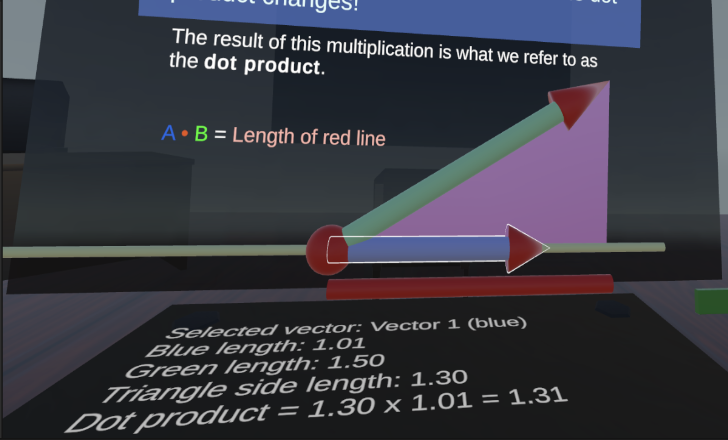

Virtual Classroom
Education extended through extended reality

An actual screenshot from our VR experiments teaching vector math!
About this project
Throughout the Spring 2024 semester for the course CMSC838C - Advances in XR, I led a group of five through a semester long project to demonstrate a novel application of extended reality.
Abstract
The recent Covid-19 pandemic has highlighted the inadequacies of existing remote learning options, which have the potential to greatly enhance accessibility. Situations such as the aforementioned pandemic, inclement weather, personal health, disabilities, and other circumstances stand to benefit greatly from quality remote learning. However, traditional options like video calls and recordings have limited levels of interaction, immersion, and opportunities for “hands-on” learning that a physical classroom would provide. These aspects are especially important when teaching critical fields of study such as engineering, physics, and chemistry that have spatially complex concepts.
Approach
In this project, we explore the usage of virtual reality (VR from here on) as an interactive and immersive remote learning experience. As a proof of concept, we adapt a prerecorded video lesson on linear algebra for VR and record 32 UMD students’ changes in quiz scores before and after each type of lesson as well as self-reported enjoyment and perceived level of learning.
Implementation
Experiment Design
Results
We observe a 20% greater increase in quiz scores for subjects that did the VR lesson, suggesting higher information retention in VR. Additionally, we observe that 47% of subjects enjoyed the VR lesson more, 25% enjoyed the traditional video lesson more, and 28% enjoyed both around the same. Our results support the capabilities of VR to create learning environments with greater immersion, enjoyment, and knowledge retention, highlighting its potential in remote learning settings.